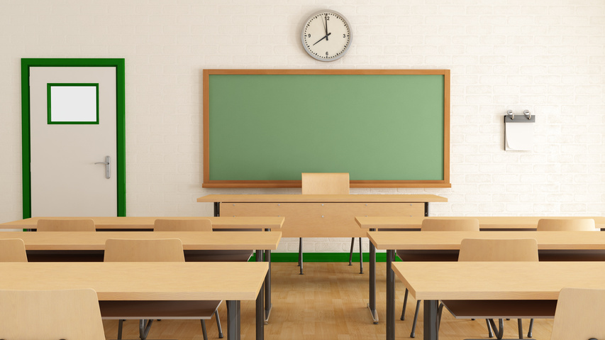
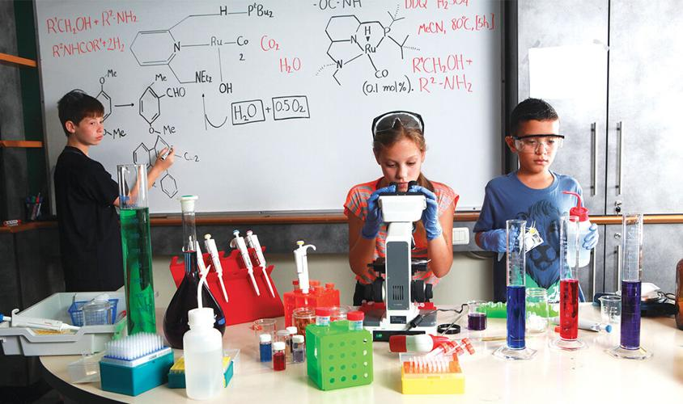
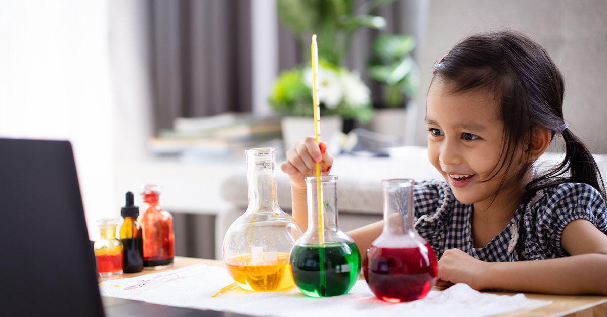
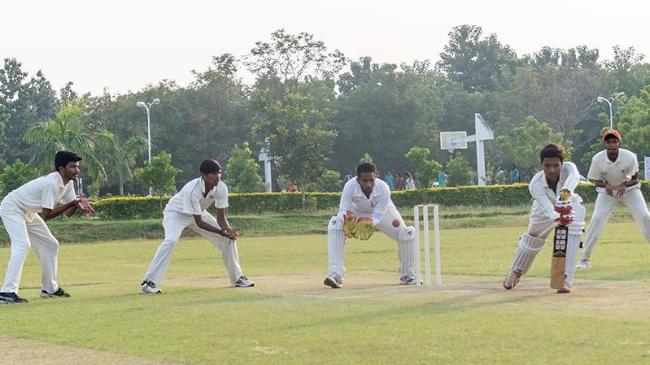
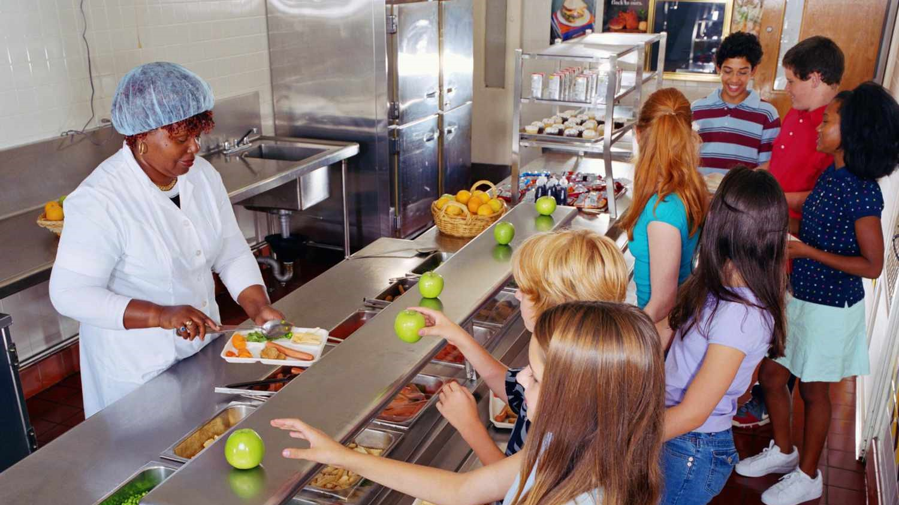
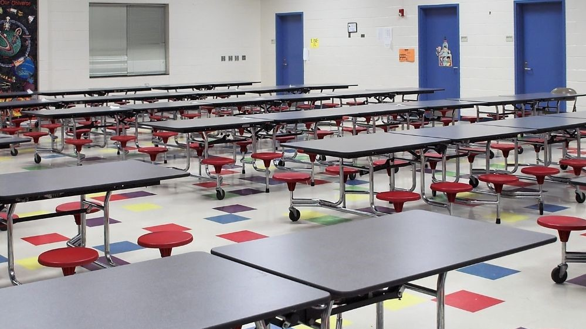

Facilities
Classroom Environment
NIPS provides spacious and technology-equipped classrooms that foster interactive learning. Each classroom is
designed to facilitate engagement and collaboration among students. The use of modern teaching aids and
audio-visual equipment enhances the overall learning experience.

Cutting-edge Laboratories
NIPS boasts cutting-edge laboratories that serve as hubs for scientific exploration. Equipped with advanced
equipment and tools, these labs cater to various disciplines such as physics, chemistry, biology, and computer
science. Students have the opportunity to conduct hands-on experiments, fostering a deeper understanding of
theoretical concepts.


Library and Research Hub
The school's library stands as a treasure trove of knowledge, promoting a culture of reading and research.
Stocked with an extensive collection of books, academic journals, and digital resources, the library provides a
conducive environment for students to enhance their learning through self-study and exploration.

Playgrounds and Sports Facilities
NIPS takes pride in its expansive sports facilities, encouraging physical activity and teamwork among students.
The school features a fully equipped gymnasium for indoor fitness, as well as outdoor sports courts for
activities like basketball, volleyball, and tennis. Additionally, there is a track for running and other
athletic pursuits.

Cafeteria and Healthy Dining
NIPS prioritizes the well-being of its students by offering a cafeteria that promotes healthy dining choices.
The cafeteria serves nutritious meals that cater to diverse dietary preferences. This space also fosters social
bonding among students, as they gather to share meals and engage in discussions.

